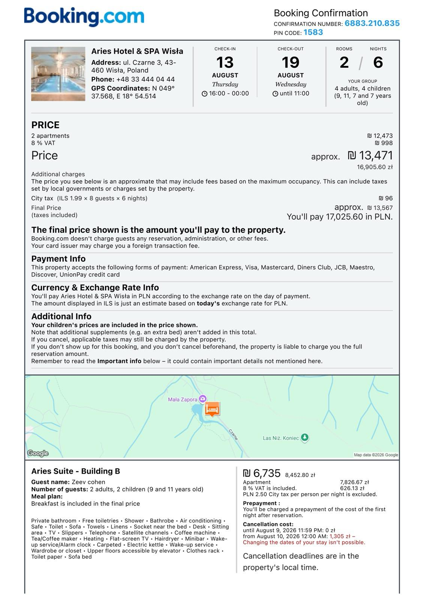
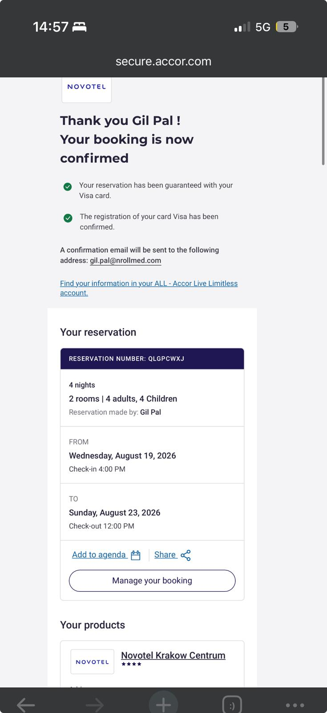

✈️ פרטי טיסות — Wizz Air✈️ Flight Details — Wizz Air
🛫 טיסת הלוךOutbound Flight — Thu 13/8/2026
Wizz Air
3h 45m
יום חמישי 13 אוגוסט 2026Thursday 13 August 2026
🛬 טיסת חזורReturn Flight — Sun 23/8/2026
Wizz Air
3h 30m
יום ראשון 23 אוגוסט 2026Sunday 23 August 2026
שלב א׳ · ויסלה · 13–19 אוג'Phase 1 · Wisła · 13–19 Aug
Aries Hotel & SPA Wisła
📍 ul. Czarne 3, Wisła · Waze: "Aries Hotel SPA Wisła"
ציון 9.5Rating 9.5
🏊 בריכה פניםIndoor pool ♨️ ג'קוזי חיצוניOutdoor jacuzzi
💆 ספא + סאונהSpa + sauna 📍 3 ק"מ ממרכז3 km from center
Novotel Kraków Centrum
📍 ul. Kościuszki 5, Kraków · Waze: "Novotel Krakow Centrum"
📞 +48 12 299 29 00
צ'ק-אין: 16:00 · צ'ק-אאוט: 12:00Check-in: 16:00 · Check-out: 12:00
🛏 2 חדרים · 4 מבוגרים + 4 ילדים2 rooms · 4 adults + 4 children
👤 על שם: Gil Pal · אישור: QLGPCWXJGuest: Gil Pal · Reservation: QLGPCWXJ
📅 19–23 אוגוסט 2026 · 4 לילותAug 19–23, 2026 · 4 nights
📋 אישורי הזמנהBooking Confirmations
Aries Hotel & SPA Wisła — אישור: 6883.210.835 · PIN: 1583 · על שם: Zeev Cohen · 2 דירות Suite · 6 לילות · ₪13,567 (17,025 PLN) · ארוחת בוקר כלולה Confirmation: 6883.210.835 · PIN: 1583 · Guest: Zeev Cohen · 2 Suites · 6 nights · ₪13,567 (17,025 PLN) · Breakfast included
Novotel Kraków Centrum — על שם: Gil Pal · אישור: QLGPCWXJ · 2 חדרים · 4 לילות · 19–23 אוגוסט · צ'ק-אין 16:00 Guest: Gil Pal · Reservation: QLGPCWXJ · 2 rooms · 4 nights · Aug 19–23 · Check-in 16:00


🏔 שלב א׳ — ויסלה ובסקידים · 13–19 אוגוסט · 6 לילות🏔 Phase 1 — Wisła & Beskids · 13–19 August · 6 Nights
| 14:00 | ✈️ נחיתה קרקוב · איסוף 2 רכבים · התארגנות✈️ Land in Kraków · pick up 2 cars · organize luggage |
| 16:00 | 🚗 יציאה לדרך לכיוון ויסלה🚗 Depart towards Wisła |
| 18:15 | 🏨 הגעה ל-Aries Hotel · צ'ק-אין ומנוחה🏨 Arrive Aries Hotel · check-in & rest |
| 19:00 | 🍽️ ארוחת ערב ראשונה במסעדת Aries🍽️ First dinner at Aries restaurant |
| ~20:05 | 🌅 שקיעת השמש באזור ויסלה🌅 Sunset over the Wisła area |
| 09:00 | 🚡 גונדולת Czantoria (995 מ') — 6 דקות עלייה · גבול פולין-צ'כיה · נוף פנורמי🚡 Czantoria gondola (995m) — 6-min ride · Poland–Czech border · panoramic views |
| 10:00 | 🎿 מגלשת קיץ אלפינית 700 מ' — עם בלמים ידניים, ילדים אוהבים לעשות כמה סיבובים🎿 700m summer alpine slide — with hand brakes, kids always want to go again |
| 11:00 | 👁 מגדל תצפית + Sokolnia — הפגנת נשרים חיים (~15 דקות)👁 Viewpoint tower + Sokolnia — live eagle & hawk show (~15 min) |
| 12:00 | ⬇️ ירידה בגונדולה + ארוחת צהריים באוסטרון⬇️ Gondola down + lunch in Ustroń |
| 14:00 | ☕ זמן חופשי / מנוחה / קפה ב-אוסטרון☕ Free time / rest / coffee in Ustroń |
| 16:30 | 🚗 חזרה ל-Aries Hotel (~21 ק"מ · ~25 דקות)🚗 Return to Aries Hotel (~21 km · ~25 min) |
| 18:30 | ♨️ ספא / בריכה / ג'קוזי Aries + ארוחת ערב♨️ Aries spa / pool / jacuzzi + dinner |
| 09:00 | 🚗 יציאה ל-Równica🚗 Depart to Równica |
| 09:30 | 🌲 Równica (884 מ') — פארק חבלים: 6 מסלולי קושי לגיל 3–16 + מגלשת אלפינית על מסילה🌲 Równica (884m) — rope park: 6 difficulty levels (age 3–16) + alpine rail slide |
| 13:00 | 🍽️ ארוחת צהריים באוסטרון🍽️ Lunch in Ustroń |
| 15:00 | ☕ טיול קצר + קפה בעיירה☕ Short walk + coffee in town |
| 16:30 | 🚗 חזרה ל-Aries (~18 ק"מ · ~22 דקות · DK81 → DK941)🚗 Return to Aries (~18 km · ~22 min · DK81 → DK941) |
| 18:30 | ♨️ ספא / בריכה / ג'קוזי Aries + ארוחת ערב♨️ Aries spa / pool / jacuzzi + dinner |
| 09:30 | 🌊 Tropikana — פתוח 08:00–21:00 · פתוח לכולם (לא רק אורחי המלון)🌊 Tropikana — open 08:00–21:00 · open to all (not only hotel guests) |
| 09:30–17:00 | בריכת 25 מ' · בריכת גלים · ג'קוזי חיצוני עם נוף לסקי-ג'אמפ · מגלשות מים · זרם נהרון · סאונה פינית + ערבית · ברודזיק 36°C 25m pool · wave pool · outdoor jacuzzi with ski-jump views · water slides · lazy river · Finnish + steam sauna · toddler pool 36°C |
| 13:00 | 🍽️ הפסקת צהריים בתוך המתחם🍽️ Lunch break inside the complex |
| 17:30 | 🚗 חזרה ל-Aries · ג'קוזי + ספא Aries ערב🚗 Back to Aries · evening Aries jacuzzi + spa |
| 09:00 | 🅿️ חניה ליד OSP Wisła Czarne (10 זלוטי/יום)🅿️ Park at OSP Wisła Czarne (10 PLN/day) |
| 09:15 | 💧 Kaskady Rodła — שביל אספלטי · 25 מפלים עד 5 מ' · ~3 ק"מ💧 Kaskady Rodła — paved trail · 25 waterfalls up to 5m · ~3 km |
| 11:00 | 🧺 מנוחה + פיקניק ליד המפלים🧺 Rest + picnic by the waterfalls |
| 12:00 | 🏛️ חזרה + עצירה ב-Zameczek (ארמון נשיא על שפת אגם Czerniańskie)🏛️ Walk back + stop at Zameczek (Presidential palace on Lake Czerniańskie) |
| 14:00 | 🍽️ ארוחת צהריים ב-ויסלה מרכז (~4 ק"מ · ~6 דקות)🍽️ Lunch in Wisła center (~4 km · ~6 min) |
| 16:00 | 🚶 פרומנדה ויסלה + חזרה ל-Aries🚶 Wisła promenade + back to Aries |
| 18:00 | 🍽️ ארוחת ערב ב-ויסלה מרכז / מסעדת Aries🍽️ Dinner in Wisła center / Aries restaurant |
| 09:30 | 🚡 Skolnity — כיסא-ליפט 4 מקומות (800 מ') לפסגת Wierch Skolnity🚡 Skolnity — 4-seat chairlift (800m) up to Wierch Skolnity summit |
| 10:00 | 🌿 Sky Walk — מסלול הליכה מושעה בגובה 38 מ' בין צמרות עצים · נוף פנורמי🌿 Sky Walk — suspended walkway 38m high through tree canopy · panoramic views |
| 11:00 | 🦙 חוות האלפקות — היחידה בויסלה! אלפקות + חמור Serwacy + בית עץ ענק + מגרש משחקים🦙 Alpaca farm — the only one in Wisła! Alpacas + donkey Serwacy + giant treehouse + playground |
| 12:30 | ⬇️ ירידה בכיסא-ליפט · ארוחת צהריים בויסלה מרכז⬇️ Chairlift down · lunch in Wisła center |
| 14:00 | 🌳 Kopczyński Park + פרומנדה ויסלה + קניות מזכרות🌳 Kopczyński Park + Wisła promenade + souvenir shopping |
| 17:00 | ♨️ חזרה ל-Aries · ספא + ג'קוזי + בריכה (פתוח עד 22:00)♨️ Back to Aries · spa + jacuzzi + pool (open until 22:00) |
| 19:30 | 🍽️ ארוחת פרידה ממסעדת Aries🍽️ Farewell dinner at Aries restaurant |
🏙 שלב ב׳ — קרקוב · 19–23 אוגוסט · 4 לילות🏙 Phase 2 — Kraków · 19–23 August · 4 Nights
| 09:00 | 🧳 צ'ק-אאוט מ-Aries · יציאה לקרקוב🧳 Check out from Aries · drive to Kraków |
| ~11:15 | 🏨 הגעה ל-Novotel · פריקת מזוודות (צ'ק-אין רשמי מ-16:00)🏨 Arrive Novotel · drop bags (official check-in from 16:00) |
| 11:15–13:30 |
⚙️ במקביל: 👨👩👧👦 משפחות — התארגנות בחדרים + ארוחת צהריים קלה במלון 🚗 נהגים — נסיעה לשדה התעופה KRK (~16 ק"מ · ~22 דקות) להחזרת 2 הרכבים ⚙️ In parallel: 👨👩👧👦 Families — settle into rooms + light lunch at hotel 🚗 Drivers — drive to KRK airport (~16 km · ~22 min) to return both cars |
| ~13:30 | 🚕 Bolt / Uber — חזרה מהשדה ל-Novotel (~55–70 זלוטי לרכב)🚕 Bolt / Uber — back from airport to Novotel (~55–70 PLN per ride) |
| 14:00 | 😴 מנוחת צהריים קצרה😴 Short afternoon rest |
| 16:00 | 🏛️ Rynek Główny — כיכר השוק הראשית של קרקוב🏛️ Rynek Główny — Kraków's Main Market Square |
| 16:00–20:00 | 🛍️ קניות + בתי קפה + אווירת רחוב + Obwarzanek (טבעת הלחם הפולנית)🛍️ Shopping + cafés + street atmosphere + Obwarzanek (Polish bread ring) |
| 20:00 | 🍽️ ארוחת ערב בסביבות הכיכר🍽️ Dinner near the Main Square |
🚌 אוטובוס 304Bus 304
| תחנהStop | Jubilat — 50m מ-Novotelfrom Novotel |
| זמן נסיעהJourney | ~35 דקותmin |
| תדירותFrequency | כל 20 דקותEvery 20 min |
| מחירPrice | ~5 PLN לאדםper person |
| קנייהBuy | 📱 MPK App · Contactless · מכונה בתחנהmachine at stop |
| אחרון חזרהLast bus back | ~22:53 ✅ |
🚕 Bolt / Uber
| נסיעה אחתOne way | ~45–55 PLN |
| הלוך + חזור למשפחהRound trip per family | ~90–110 PLN |
| יתרוןAdvantage | נוח, דלת לדלתComfortable, door to door |
| 09:00 | 🚌/🚕 יציאה ל-Wieliczka🚌/🚕 Depart to Wieliczka |
| 09:30 | ⛏️ מכרות מלח ויליצ'קה — סיור ~2.5 שעות · כנסיית מלח · פסלים · 125 מ' מתחת לאדמה⛏️ Wieliczka Salt Mine — ~2.5h tour · salt church · sculptures · 125m underground |
| 12:00 | 🍽️ ארוחה במסעדה תת-קרקעית (125 מ' עומק!)🍽️ Lunch in the underground restaurant (125m deep!) |
| 14:00 | 🚌/🚕 חזרה ל-Novotel · מנוחה🚌/🚕 Return to Novotel · rest |
| 16:30 | 🏰 גבעת וואוול מבחוץ — כניסה חינם · תצפית נהדרת🏰 Wawel Hill exterior — free entry · great viewpoint |
| 09:00 | ✈️ מוזיאון התעופה הפולני — אחד הגדולים בעולם · 200+ מטוסים, מסוקים ודאונים · מטוסי מלחמת העולם I ו-II · ילדים נכנסים לקוקפיטים!✈️ Polish Aviation Museum — one of the world's largest · 200+ aircraft, helicopters and gliders · WWI & WWII planes · kids can enter cockpits! |
| 11:30 | 🚕 Bolt/Uber חזרה ל-Novotel · הפסקה קצרה🚕 Bolt/Uber back to Novotel · short break |
| 13:00 | 🏛️ יציאה לעיר העתיקה — Stare Miasto🏛️ Head to the Old Town — Stare Miasto |
| 13:00 | 🍽️ ארוחת צהריים בעיר העתיקה (Bar Mleczny / Grodzka Street)🍽️ Lunch in the Old Town (Bar Mleczny / Grodzka Street) |
| 14:00 | 🛍️ Rynek Główny — קניות ב-Sukiennice (ענבר, מלאכת יד, מזכרות)🛍️ Rynek Główny — shopping at Sukiennice (amber, crafts, souvenirs) |
| 15:30 | ☕ בתי קפה בסמטאות — רחוב Floriańska / Grodzka☕ Cafés in the alleys — Floriańska St / Grodzka St |
| 17:00 | 🌳 Planty — גן הטיילת המקיף את העיר העתיקה🌳 Planty — green park ring surrounding the Old Town |
| 19:30 | 🍽️ ארוחת ערב בעיר העתיקה🍽️ Dinner in the Old Town |
| 09:00 | 🏰 טירת וואוול + מערת הדרקון Smocza Jama — דרקון פולף אש! ילדים מתלהבים🏰 Wawel Castle + Smocza Jama Dragon's Cave — fire-breathing dragon! kids love it |
| 11:30 | 🚶 רחוב Kanonicza → קזימז' — גלריות, בתי קפה, חצרות🚶 Kanonicza Street → Kazimierz district — galleries, cafés, courtyards |
| 13:30 | 🍽️ ארוחת צהריים ב-קזימז'🍽️ Lunch in Kazimierz |
| 15:00 | 🧳 צ'ק-אאוט + מזוודות לאחסון במלון · טיול פרידה🧳 Check out + store bags at hotel · farewell stroll |
| 19:00 | 🍽️ ארוחת פרידה — Miód Malina, ul. Grodzka 40 — הזמינו מראש!🍽️ Farewell dinner — Miód Malina, ul. Grodzka 40 — book ahead! |
| 21:30 | 🚕 Bolt/Uber לשדה התעופה (~22 דקות · ~55–75 PLN לרכב)🚕 Bolt/Uber to airport (~22 min · ~55–75 PLN per ride) |
| 03:00 | ✅ הגעה לשדה התעופה KRK✅ Arrive at KRK airport |
| 05:40 | ✈️ המראה קרקוב → תל אביב · נחיתה 10:10✈️ Depart Kraków → Tel Aviv · arrive 10:10 |
🍽 אוכל — מה לאכול ואיפה🍽 Food — What & Where to Eat
🏔 ויסלה ובסקידים🏔 Wisła & Beskids
Oscypek חייבים לנסותMust try
גבינת כבשים מעושנת מהטטרה, צלויה על גריל עם ריבת חמוציות. נמכרת בדוכנים ובכל קארצ'מה.Smoked sheep cheese from the Tatras, grilled and served with cranberry jam. Found at stalls and every karczma.
💰 ~8–12 PLN
Placek po zbójnicku חייבים לנסותMust try
לביבת תפוח אדמה ענקית עם גולש עסיסי מעל — מנת ההרים המושלמת אחרי טיול.Giant potato pancake topped with hearty beef goulash — the perfect mountain meal after a hike.
💰 ~25–35 PLN
Żurek góralski חייבים לנסותMust try
מרק שיפון חמוץ הרי, מוגש לפעמים בכיכר לחם עם ביצה ונקניק. מחמם מבפנים!Sour rye mountain soup, sometimes served in a bread bowl with egg and sausage. Warming after a day outside!
💰 ~18–28 PLN
🍴 Stara Karczma Wisła
קארצ'מה אותנטית ליד גבול צ'כיה. אווירה עץ מקורית, תפריט מסורתי עשיר, שירות מצוין לקבוצות גדולות עם ילדים.Authentic inn near Czech border. Original wood interior, rich traditional menu, excellent for large groups with kids.
🍴 Restauracja Aries
המסעדה של המלון — מצוינת לפי חוות דעת, מחירים הוגנים, תפריט פולני-הררי. נוח במיוחד בערבים.The hotel's own restaurant — excellent reviews, fair prices, Polish-mountain menu. Very convenient for evenings.
📍 Aries Hotel, ul. Czarne 3
🏙 קרקוב🏙 Kraków
Zapiekanka — Plac Nowy חייבים לנסותMust try
הסנדוויץ' הסמלי של קרקוב — חצי באגט אפוי עם פטריות, גבינה ותוספות. נמכר מהרוטונדה ב-Plac Nowy. כמעט 24/7. חובה!Kraków's iconic street food — long baguette half baked with mushrooms, cheese and toppings. Sold from the Plac Nowy rotunda. Almost 24/7. A must!
📍 Plac Nowy, Kazimierz · 💰 ~15–22 PLN
Pierogi Ruskie חייבים לנסותMust try
כיסוני בצק ממולאים תפוח אדמה + גבינת קוטג' + בצל מקורמל. הטעם המנחם של פולין. הכי טוב ב-Bar Mleczny.Dough pockets filled with potato, cottage cheese & caramelized onion. Poland's comfort food. Best at a Milk Bar.
💰 ~12–18 PLN
Obwarzanek Krakowski חייבים לנסותMust try
טבעת הלחם הסמלית של קרקוב — שומשום/פרג/מלח, מעגלות כחולות בכל פינה. מוצר מוגן UNESCO!Kraków's iconic braided bread ring — sesame/poppy/salt, sold from blue carts on every corner. UNESCO-protected!
💰 ~2–4 PLN
🍴 Miód Malina
מסעדה פולנית קלאסית ליד כיכר השוק — אווירה מצוינת, מומלצת לארוחת פרידה. הזמינו מקום מראש!Classic Polish restaurant near Main Square — great atmosphere, ideal for farewell dinner. Book ahead!
📍 ul. Grodzka 40 · 💰 ~40–70 PLN
🥪 Bar Mleczny "Pod Temidą"
הבר החלבי האיקוני של קרקוב — פיירוגי, ביגוס, שניצל, מרקים. הכול במחירי שנות ה-80. אידיאלי לצהריים זול!Kraków's iconic milk bar — pierogi, bigos, schnitzel, soups. Everything at 1980s prices. Ideal for cheap lunch!
📍 ul. Grodzka 43 · 💰 ~8–20 PLN
✅ צ'קליסט — הזמינו מראש בדחיפות✅ Checklist — Book Urgently in Advance
🆘 מספרי חירוםEmergency Numbers
🚓 משטרה: 997 | 🚑 אמבולנס: 999 | 🚒 כיבוי: 998 | 🆘 חירום: 112
🇮🇱 שגרירות ישראל בורשה: +48 22 520 0500
🚓 Police: 997 | 🚑 Ambulance: 999 | 🚒 Fire: 998 | 🆘 Emergency: 112
🇮🇱 Israeli Embassy Warsaw: +48 22 520 0500